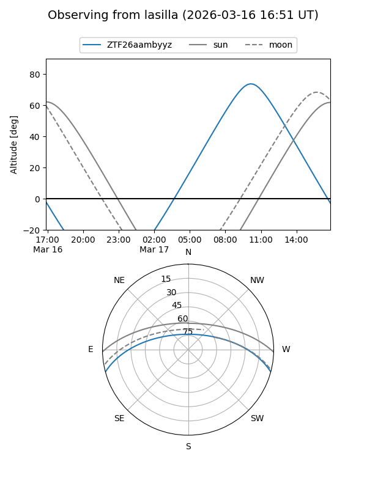
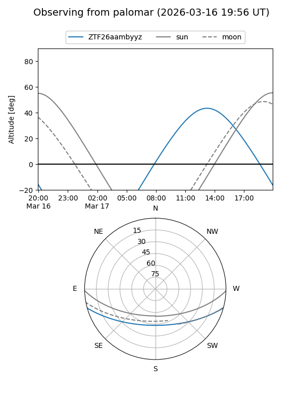

ZTF26aambyyz
Target ZTF26aambyyz at 2026-03-16 14:16
Aliases and brokers:
FINK: link
Lasair: link
ALeRCE: link
alt names
ZTF26aambyyz (ztf,fink_ztf)
Coordinates:
equatorial (ra, dec) = 256.2595,-13.07644
equatorial (HMS+DMS) = 17:05:02.28,-13:04:35.20
galactic (l, b) = (8.2517,+16.55883)
Flags:
Photometry:
last ztfg=16.71
1 ztfg detections
Lightcurve
Visibility


Additional plots